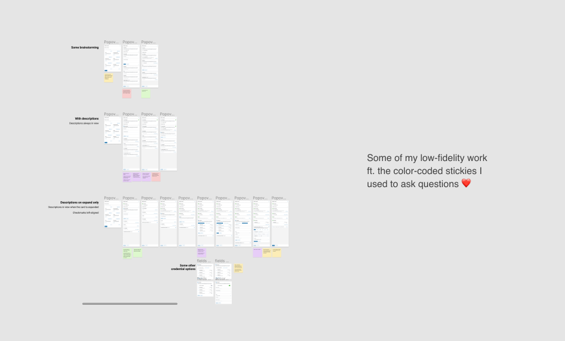

Product Design Intern
Product & Engineering team
September 2021 - December 2021
Over the course of Fall 2021, I interned at ThinkData Works, a Toronto-based startup, as a product design intern. Working on a small design team of two (the design lead and I), I led the design of two end-to-end projects. I was first tasked to redesign the members & teams experience to increase member invitation and team creation. I then tackled the redesign of a cataloguing feature that empowered businesses to find data faster and organize data better.
Due to NDA restrictions, I am unable to elaborate on the process of both projects, so please contact me if you'd like to find out more! For now, continue reading if you're interested in some of my learnings.
As someone with an engineering background, I always thought I had to follow a strict research and design process. However, in a fast-paced startup environment, designers are always adapting to whatever resources are available at moment. We didn't yet have resources for user research, so we worked with assumptions. Although some assumptions were tested by talking to the product director and through competitive analysis, it was not quite as informative as talking to users. I learned to let go of the rigid design process I've been taught and adapt to the environment I was working under. I accepted that my designs are just the start of a product that will continue to iterate. Eventually we'll collect product analytics data and have the resources to talk to more users. In the future, we'll be able to make better, more informed decisions. The idea that my designs were the gateway to future iterations was something I took into consideration while designing.
For my second project, the design process was not linear. I got to a stage where I had defined the design goals and had gone through a low and medium fidelity iterations. However, we realized the component would not scale to other areas in the application. Being in a such a supportive environment throughout this process was such a blessing. Both the design lead and engineer understood that we were still figuring out usability issues and defining behaviour patterns for our interface. They encouraged me to try new ideas and think broadly at a point in my design process where I thought I had to be narrowing my scope. So instead of moving forward with the design, I backtracked and redefined the scope of the project with our newly discovered insights. This led me down a new path which ultimately led to a solution that fit
Having project ownership as an intern is both extrememly daunting and totally fulfilling. It was definitely a challenge to figure out what I needed to know about the user and the technology on my own. I made it a priority to ask questions as much as possible, putting color-coded sticky notes everywhere around my work. I think however, there were also times where I should have taken more initiative to test assumptions and ask questions where I didn't because I thought I had to follow the status quo set by pre-established design processes at the company. But in retrospect, I was working at a startup! Design processes are iterative and grow just as the product does. There is always room to be more inquisitive and thoughtful and it's something I'll be more aware of at future opportunities.

© Coded with 💙 by jennyfurhe